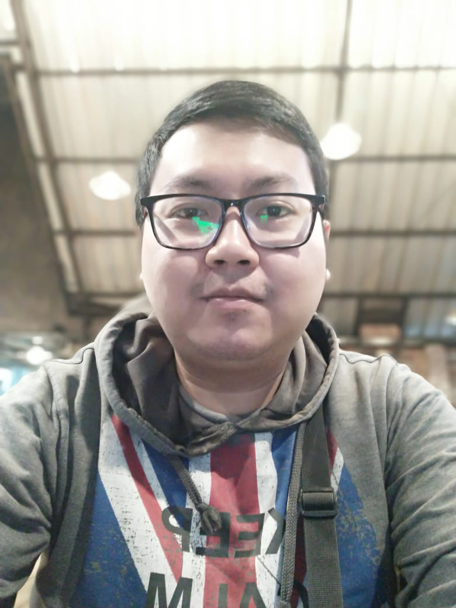

Daffi Rauf

Summary
I am a Food Science & Technology bachelor that worked as banker, i'm interested in programming, data analytics and digital products.
Education
- Bachelor of Food & Science Technology, Brawijaya University (2009-2013) - GPA 3.36
- College Activity
Work Experience
Skills
- Risk Management : ⭐️⭐️⭐️⭐️
- Fraud Management : ⭐️⭐️⭐️
- Data Analytics : ⭐️⭐️⭐️⭐️
- Microsoft Office : ⭐️⭐️⭐️⭐️⭐️
- Basic SQL : ⭐️⭐️
- Organizational Skills : ⭐️⭐️⭐️⭐️
Awards and Certifications
- Risk Management Certification Level 1 (2022)
Others